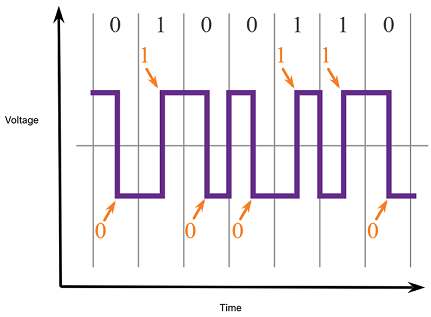
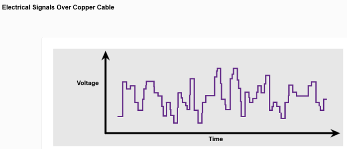
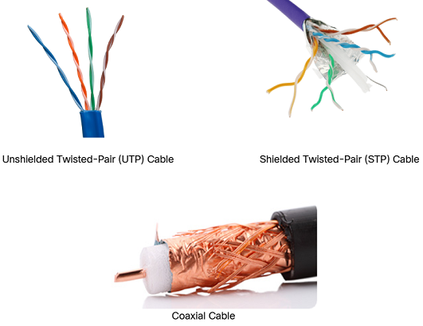
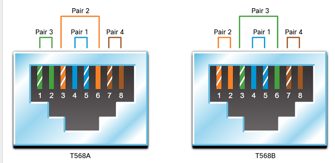
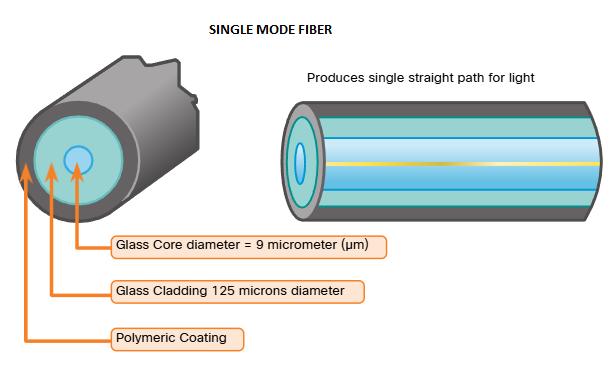
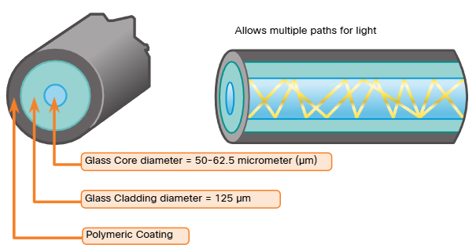

FUNCTIONAL AREAS OF PHYSICAL LAYER
The physical layer standards address three functional areas:
- Physical Components
- Encoding
- Signaling
Physical Components
The physical components are the electronic hardware devices, media, and other connectors that transmit the signals that represent the bits.
Hardware components such as NICs, interfaces and connectors, cable materials, and cable designs are all specified in standards associated with the physical layer.
Encoding
Encoding or line encoding is a method of converting a stream of data bits into a predefined "code". Codes are groupings of bits used to provide a predictable pattern that can be recognized by both the sender and the receiver. In other words, encoding is the method or pattern used to represent digital information. This is similar to how Morse code encodes a message using a series of dots and dashes

Signaling
The physical layer must generate the electrical, optical, or wireless signals that represent the "1" and "'" on the media. The way that bits are represented is called the signaling method.

BANDWIDTH
Different physical media support the transfer of bits at different rates. Data transfer is usually discussed in terms of bandwidth. Bandwidth is the capacity at which a medium can carry data. Digital bandwidth measures the amount of data that can flow from one place to another in a given amount of time. Bandwidth is typically measured in kilobits per second (kbps), megabits per second (Mbps), or gigabits per second (Gops).
Bandwidth is sometimes thought of as the speed that bits travel, however this is not accurate. For example, in both 10Mbps and 100Mbps Ethernet, the bits are sent at the speed of electricity. The difference is the number of bits that are transmitted per second
A combination of factors determines the practical bandwidth of a network:
- The properties of the physical media
- The technologies chosen for signaling and detecting network signals
Physical media properties, current technologies, and the laws of physics all play a role in determining the available bandwidth.
The table shows the commonly used units of measure for bandwidth.
| Unit of Bandwidth |
Abbreviation |
Equivalence |
| Bits per second |
bps |
1 bps = fundamental unit of bandwidth |
| Kilobits per second |
Kbps |
1 Kbps = 1,000 bps |
| Megabits per second |
Mbps |
1 Mbps = 1,000,000 bps |
| Gigabits per second |
Gbps |
1 Gbps = 1,000,000,000 bps |
| Terabits per second |
Tbps |
1 Tbps = 1.000.000.000.000 bps |
BANDWIDTH TERMINOLOGY
Terms used to measure the quality of bandwidth include:
- Latency
- Throughput
- Goodput
Latency
Latency refers to the amount of time, including delays, for data to travel from one given point to another.
In an internetwork, or a network with multiple segments, throughput cannot be faster than the slowest link in the path from source to destination.
Even if all, or most, of the segments have high bandwidth, it will only take one segment in the path with low throughput to create a bottleneck in the throughput of the entire network.
Throughput
Throughput is the measure of the transfer of bits across the media over a given period of time
Due to a number of factors, throughput usually does not match the specified bandwidth in physical layer implementations. Throughput is usually lower than the bandwidth. There are many factors that influence throughput:
- The amount of traffic
- The type of traffic
- The latency created by the number of network devices encountered between source and destination
Goodput
There is a third measurement to assess the transfer of usable data; it is known as goodput. Goodput is the measure of usable data transferred over a given period of time. Goodput is throughput minus traffic overhead for establishing sessions, acknowledgments, encapsulation, and retransmitted bits. Goodput is always lower than throughput, which is generally lower than the bandwidth.
COPPER CABLING
Characteristics of Copper Cabling
Copper cabling is the most common type of cabling used in networks today. In fact, copper cabling is not just one type of cable. There are three different types of copper cabling that are each used in specific situations.
Networks use copper media because it is inexpensive, easy to install, and has low resistance to electrical current. However, copper media is limited by distance and signal interference.
Types of Copper Cabling
- UTP - Unshielded Twisted-Pair Cable
- STP - Shielded Twisted-Pair Cable
- Coaxial Cable

KEY CHARACTERISTICS OF UNSHIELDED TWISTED-PAIR CABLE
- The outer jacket protects the copper wires from physical damage.
- Twisted-pairs protect the signal from interference.
- Color-coded plastic insulation electrically isolates wires from each other and identifies each pair.
STRAIGHT-THROUGH AND CROSSOVER UTP CABLES
Different situations may require UP cables to be wired according to different wiring conventions. This means that the individual wires in the cable have to be connected in different orders to different sets of pins in the RJ-45 connectors.
Main cable types that are obtained by using specific wiring conventions:
- Ethernet Straight-through - The most common type of networking cable. It is commonly used to interconnect a host to a switch and a switch to a router.
-
- Ethernet Crossover - A cable used to interconnect similar devices. For example, to connect a switch to a switch, a host to a host, or a router to a router. However, crossover cables are now considered legacy as NICs use medium-dependent interface crossover (auto-MDIX) to automatically detect the cable type and make the internal connection.

Cable Types and Standards
| Cable Type |
Standard |
Application |
| Ethernet Straight-through |
Both ends T568A or both ends T568B |
Connects a network host to a network device such as a switch or hub |
| Ethernet Crossover |
One end T568A, other end T568B |
Connects two network hosts Connects two network intermediary devices (switch to switch or router to router) |
| Rollover |
Cisco proprietary |
Connects a workstation serial port to a router console port, using an adapter |
FIBER-OPTIC CABLE
As you have learned, fiber-optic cabling is the other type of cabling used in networks. Because it is expensive, it is not as commonly used at the various types of copper cabling.
Optical fiber cable transmits data over longer distances and at higher bandwidths than any other networking media. Unlike copper wires, fiber-optic cable can transmit signals with less attenuation and is completely immune to EMI and RFI. Optical fiber is commonly used to interconnect network devices.
Optical fiber is a flexible, but extremely thin, transparent strand of very pure glass, not much bigger than a human hair. Bits are encoded on the fiber as light impulses. The fiber-optic cable acts as a waveguide, or "light pipe," to transmit light between the two ends with minimal loss of signal.
Types of Fiber Media
Fiber-optic cables are broadly classified into two types:
- Single-mode fiber (SMF)
- Multimode fiber (MMF)
Single-Mode Fiber
SMF consists of a very small core and uses expensive laser technology to send a single ray of light, as shown in the figure. SMF is popular in long-distance situations spanning hundreds of kilometers, such as those required in long haul telephony and cable TV applications.

Multimode Fiber
MMF consists of a larger core and uses LED emitters to send light pulses. Specifically, light from an LED enters the multimode fiber at different angles, as shown in the figure. MFs are popular in LANs because they can be powered by low-cost LEDs. It provides bandwidth up to 10 Gbps over link lengths of up to 550 meters.

WIRELESS MEDIA
You may be taking this course using a tablet or a smart phone. This is only possible due to wireless media, which is the third way to connect to the physical layer of a network.
Wireless media carry electromagnetic signals that represent the binary digits of data communications using radio or microwave frequencies.
Wireless media provide the greatest mobility options of all media, and the number of wireless-enabled devices continues to increase. Wireless is now the primary way users connect to home and enterprise networks
Limitations of wireless:
- Coverage area - Wireless data communication technologies work well in open environments. However, certain construction materials used in buildings and structures, and the local terrain, will limit the effective coverage
- Interference - Wireless is susceptible to interference and can be disrupted by such common devices as household cordless phones, some types of fluorescent lights, microwave ovens, and other wireless communications
- Security - Wireless communication coverage requires no access to a physical strand of media. Therefore, devices and users, not authorized for access to the network, can gain access to the transmission. Network security is a major component of wireless network administration.
- Shared medium - WLANs operate in half-duplex, which means only one device can send or receive at a time. The wireless medium is shared amongst all wireless users. Many users accessing the WLAN simultaneously results in reduced bandwidth for each user.
Types of Wireless Media
The IEEE and telecommunications industry standards for wireless data communications cover both the data link and physical layers. In each of these standards, physical layer specifications are applied to areas that include the following:
- Data to radio signal encoding
- Frequency and power of transmission
- Signal reception and decoding requirements
- Antenna design and construction
Wireless standards:
- Wi-Fi (IEEE 802.11) - Wireless LAN (WLAN) technology, commonly referred to as Wi-Fi. WLAN uses a contention-based protocol known as carrier sense multiple access/collision avoidance (CSMA/CA). The wireless NIC must first listen before transmitting to determine if the radio channel is clear. If another wireless device is transmitting, then the NIC must wait until the channel is clear. Wi-Fi is a trademark of the Wi-Fi Alliance. Wi-Fi is used with certified WLAN devices based on the IEEE 802.11 standards
- Bluetooth (IEEE 802.15) - This is a wireless personal area network (WPAN) standard, commonly known as "Bluetooth." It uses a device pairing process to communicate over distances from 1 to 100 meters.
- WiMAX (IEEE 802.16) - Commonly known as Worldwide Interoperability for Microware Access (WiMAX), this wireless standard uses a point-to-multipoint topology to provide wireless broadband access.
- Zigbee (IEEE 802.15.4) - Zigbee is a specification used for low-data rate, low-power communications. It is intended for applications that require short-range, low data-rates and long battery life. Zigbee is typically used for industrial and Internet of Things (loT) environments such as wireless light switches and medical device data collection
Wireless LAN
A common wireless data implementation is enabling devices to connect wirelessly via a LAN.
A WLAN requires the following network devices:
- Wireless Access Point (AP) - These concentrate the wireless signals from users and connect to the existing copper-based network infrastructure, such as Ethernet. Home and small business wireless routers integrate the functions of a router, switch, and access point into one device
- Wireless NIC adapters - These provide wireless communication capability to network hosts.
As the technology has developed, a number of WLAN Ethernet-based standards have emerged. When purchasing wireless devices, ensure compatibility and interoperability.
The benefits of wireless data communications technologies are evident, especially the savings on costly premises wiring and the convenience of host mobility. Network administrators must develop and apply stringent security policies and processes to protect WLANs from unauthorized access and damage.